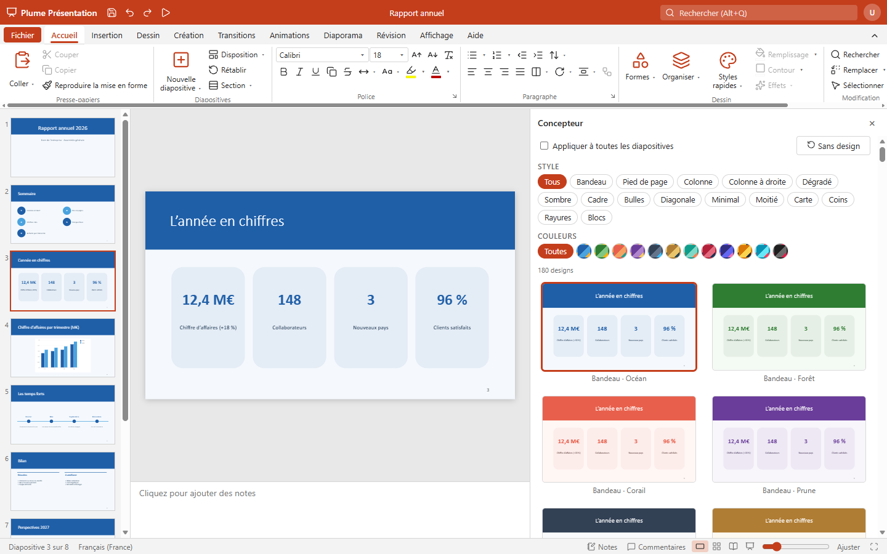
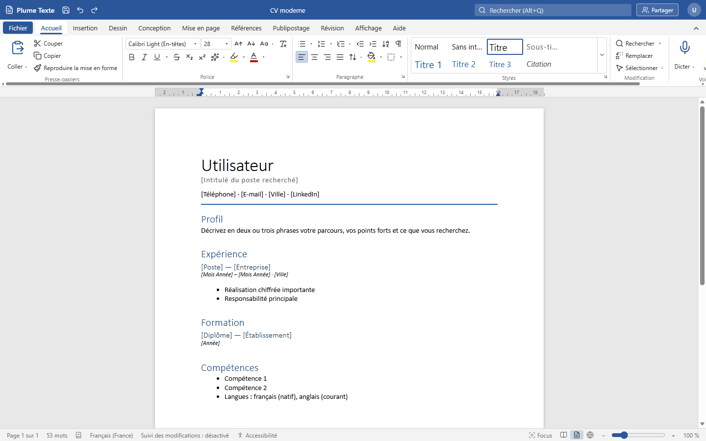
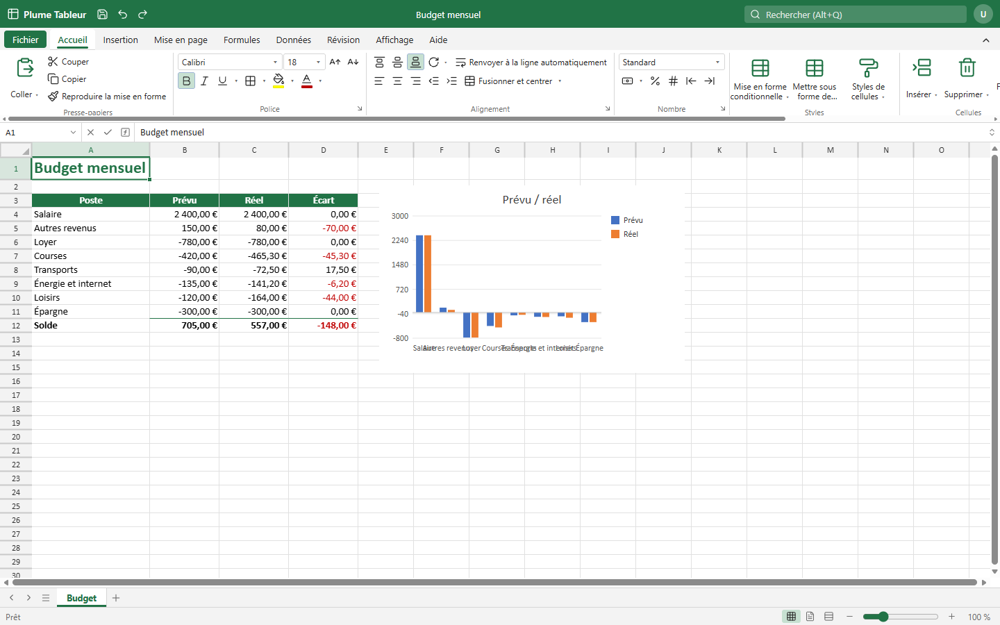
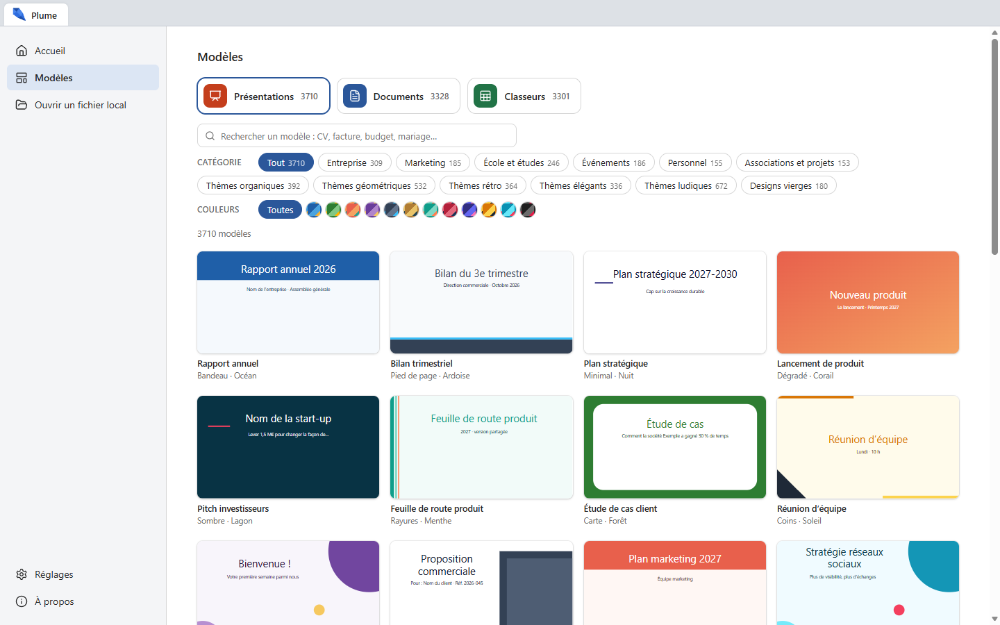

Texte, tableur et présentations,
compatibles Word, Excel et PowerPoint
Plume ouvre et enregistre les fichiers Office sans rien perdre, avec plus de 10 000 modèles prêts à remplir. Gratuit, sans compte et sans publicité, sur ton ordinateur, dans le navigateur ou sur ton propre serveur.
Version du 23 novembre 2026

Pourquoi Plume
Une suite bureautique complète, qui respecte tes fichiers et ta vie privée.
Vraiment compatible Office
Un .docx, un .xlsx ou un .pptx ouvert puis enregistré dans Plume s’ouvre à l’identique dans Word, Excel et PowerPoint.
Plus de 10 000 modèles
CV, lettres, rapports, budgets, factures, plannings, pitchs, exposés : tout est prêt, il ne reste qu’à remplir.
Tes fichiers restent chez toi
Les documents sont enregistrés sur ton appareil. Pas de compte, pas de cloud imposé, pas de publicité.
Sans connexion
L’application pour ordinateur marche entièrement hors ligne : tout est dans le programme.
Coédition en temps réel
Héberge Plume sur ton serveur et modifiez à plusieurs le même document, en direct.
Assistant IA, si tu veux
Un serveur MCP facultatif permet à Claude ou à un autre assistant de lire et rédiger tes documents.
À ton goût
Mode clair, sombre ou comme le système, et la couleur de chaque appli au choix.
Gratuit et libre
Plume est gratuit, sous licence MIT, et son code est public.
Trois applis, une seule Plume
Les mêmes outils que dans Word, Excel et PowerPoint, aux mêmes endroits : rubans, raccourcis clavier, volets.
Lettres, CV, rapports, mémoires
Un traitement de texte complet, de la lettre d’une page au mémoire de cent pages.
- Styles, titres, table des matières et notes de bas de page automatiques
- En-têtes et pieds de page, sections, colonnes, mise en page précise
- Suivi des modifications et commentaires, comme dans Word
- Équations tapées dans le texte ou écrites à la main
- Tableaux, images, formes, SmartArt, dessin à l’encre
- Publipostage, vérification de l’orthographe, dictée
Ouvre .docx .dotx .docm .rtf .html .md .txt · enregistre aussi en .pdf

Budgets, plannings, factures, analyses
Un vrai tableur, avec les formules en français et les fonctions d’Excel.
- Formules en français, dont RECHERCHEX et les formules matricielles dynamiques
- Graphiques, graphiques sparkline et tableaux croisés dynamiques
- Mise en forme conditionnelle, barres de données, jeux d’icônes
- Filtres, tris, validation des données, valeur cible
- Plan (lignes et colonnes groupées), commentaires, feuilles protégées
- Plusieurs feuilles, figer les volets, mise en page pour l’impression
Ouvre .xlsx .xlsm .xltx .csv .tsv · enregistre aussi en .pdf .html .json

Exposés, pitchs, rapports, événements
Des présentations soignées en quelques minutes, du modèle au diaporama.
- Concepteur : 180 designs à appliquer en un clic, à une diapositive ou à toutes
- Présentations complètes prêtes à remplir : rapport annuel, pitch, exposé, mariage…
- Transitions et animations, mode Présentateur avec notes et minuteur
- Vrais graphiques PowerPoint, tableaux, SmartArt, formes, images
- Masques et dispositions, thèmes et couleurs du thème
- Export en PDF, en images ou en page web
Ouvre .pptx .ppsx .potx .md · enregistre aussi en .pdf .png .jpg .html

Des modèles pour tout
L’accueil de Plume range les modèles par thème et par couleur, comme une galerie. Survole une présentation pour voir défiler ses diapositives.

Télécharger Plume
L’application pour ordinateur : une fenêtre à part avec un onglet par document, qui marche sans connexion. Les mêmes applis que la version web.
Plume pour Windows
Windows 10 et 11 (64 bits). Un seul fichier, rien à installer.
Au premier lancement, Windows peut afficher « Windows a protégé votre ordinateur » : clique sur Informations complémentaires, puis Exécuter quand même.
Plume pour Mac
Mac Apple Silicon (M1 à M4) et Mac Intel, macOS 10.15 ou plus récent. Ouvre le fichier .dmg et glisse Plume dans Applications.
Plume n’est pas encore signé par Apple. Au premier lancement, si le Mac affiche « Plume ne peut pas être ouvert » : ouvre Réglages Système › Confidentialité et sécurité, puis Ouvrir quand même. Sur macOS 14 et avant : clic droit sur Plume › Ouvrir.
Plume pour Linux
PC (x86_64) et ARM 64 bits, Raspberry Pi compris. Il faut WebKitGTK 4.1, présent sur la plupart des bureaux : Ubuntu 22.04, Debian 12, Mint 21, Fedora 39 ou plus récents.
sudo apt install ./plume_2026.11.23.2_amd64.deb
Pour l’archive : décompresse-la et lance ./plume. Si WebKitGTK manque : sudo dnf install webkit2gtk4.1 (Fedora) ou sudo pacman -S webkit2gtk-4.1 (Arch).
Plume pour FreeBSD
FreeBSD 14 (amd64), avec un bureau graphique (X11 ou Wayland).
sudo pkg install webkit2-gtk_41 tar xzf plume-freebsd-amd64.tar.gz && ./plume-freebsd-amd64/plume
Héberger Plume sur ton serveur
Mets la version web de Plume en ligne chez toi : pour ta famille, ton association, ton école ou ton entreprise. Les documents restent dans le navigateur de chacun, le serveur ne stocke aucun fichier.
Avec plume-serveur
Un petit serveur d’un seul fichier, sans dépendance, qui sert Plume et la coédition en temps réel.
- Plusieurs personnes sur le même document, en direct
- Moins de 1 Mo, démarre en un instant, tourne sur un Raspberry Pi
- Pages de Plume incluses dans le paquet
./plume-serveur 8080 . --reseau
Puis ouvre http://adresse-du-serveur:8080/. Le paquet contient aussi un service systemd et des exemples pour Apache et nginx (HTTPS).
Avec ton serveur web
Plume est fait de pages statiques : Apache, nginx, Caddy ou n’importe quel hébergement de fichiers suffit (sans la coédition).
server {
server_name plume.exemple.fr;
root /var/www/plume;
index index.html;
}
Décompresse plume-web.zip dans le dossier du site, c’est tout.
Télécharger la version serveur
Chaque paquet contient plume-serveur et les pages de Plume.
Questions fréquentes
Et si ta question n’y est pas, ouvre la version web : c’est le plus rapide pour essayer.
Plume est-il vraiment gratuit ?
Oui : pas d’abonnement, pas de publicité, pas de version payante. Plume est sous licence MIT.
Faut-il créer un compte ?
Non. Plume marche sans compte, dans l’application comme dans le navigateur. Un compte VEX sert seulement à modifier les fichiers rangés dans VEX.
Où sont enregistrés mes documents ?
Sur ton appareil. L’application les garde dans son dossier (sous Windows : %LOCALAPPDATA%\Plume) et enregistre les fichiers exportés (.docx, .pdf…) dans Documents/Plume, sans jamais écraser un fichier existant. La version web les garde dans le navigateur.
Mes fichiers Word, Excel et PowerPoint restent-ils intacts ?
Oui : Plume garde la mise en forme, les styles, les commentaires, les révisions, les graphiques et les propriétés des fichiers Office. Un fichier ouvert et enregistré dans Plume se rouvre à l’identique dans Office.
Quelle différence entre l’application et la version web ?
Les applis sont les mêmes. L’application s’ouvre dans sa propre fenêtre avec un onglet par document, marche sans connexion et range les fichiers exportés dans Documents/Plume. La version web ne demande rien à installer et marche aussi sur tablette.
Pourquoi Windows ou le Mac affichent-ils un avertissement ?
Plume n’est pas encore signé par Microsoft ni par Apple, qui demandent un certificat payant. Le programme est le même que celui publié ici : tu peux vérifier son empreinte SHA-256, affichée sous chaque fichier.
Comment désinstaller Plume ?
Windows : supprime Plume.exe (et le dossier %LOCALAPPDATA%\Plume pour effacer les documents). Mac : mets Plume dans la corbeille. Linux : sudo apt remove plume, ou supprime le dossier de l’archive.
Qu’est-ce que VEX ?
VEX est un espace de stockage de fichiers chiffrés, avec mail et messagerie. Plume en est l’éditeur de documents.